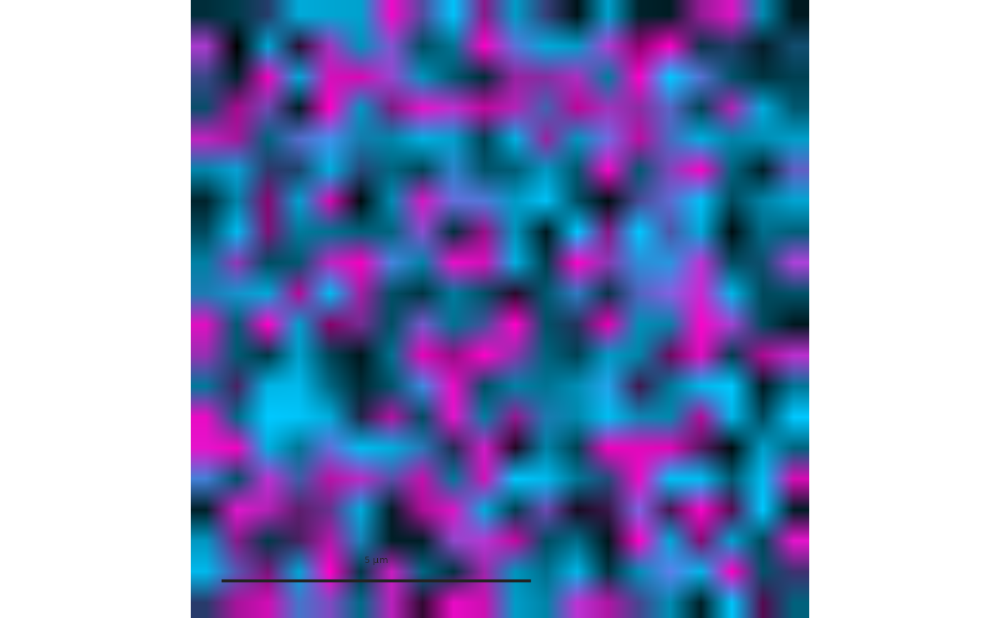

Composes an additive multichannel image from channel windows (a field as
returned by segmantR::sg_read_field()), display levels and channel
colours and weights (see CompositeFields() for the layer and level
rules), and draws it at its physical extent with optional scale bar,
corner text, arrows pointing at cells, crosses on partner cells and
boxes.
Usage
PlotFluorescenceField(
field,
layers,
slide = NULL,
levels = NULL,
marks = NULL,
index = NULL,
marks_index = NULL,
gamma = 0.8,
min_span = 1,
interpolate = TRUE,
arrow = NULL,
cross = NULL,
corner_text = NULL,
corner_size = 5,
corner_colour = "white",
corner_at = c(0.04, 0.96),
label = NULL,
label_size = 5.5,
scale_bar = list(length = 50, label = "50 um", colour = "white"),
boxes = NULL,
box_colour = "white",
box_width = 0.6,
box_size = NULL,
frame = FALSE,
style = ManuscriptStyle()
)Arguments
- field
A field (
channels,centre,size) or a list of fields withindexselecting one.- layers
List of channel layers (see
CompositeFields()).- slide, levels
Optional range tables (
channel,lo,hi).- marks
Optional data frame of cells to annotate (
x,y, and for crossespartner_x,partner_y);marks_indexselects rows.- index, marks_index
Optional selections.
- gamma, min_span
Display gamma and minimum level span.
- interpolate
Smooth the raster when scaling (bilinear).
- arrow
NULLor a list:tip,tail(offsets from the cell along both axes, physical units),colour,linewidth(points),head(arrow-head scale in points) andshrink(points left free at both ends).- cross
NULLor a list:colour,size(marker area in square points),linewidth; drawn at the partner positions.- corner_text
NULL, a fixed text, or a list withcolumnandformat(sprintf) taking the value from the first mark.- corner_size, corner_colour
Corner text size and colour.
- corner_at
Corner text position (fractions of the field, top-left anchored).
- label
Optional field label in the top-left corner (as
corner_text, larger).- label_size
Label size.
- scale_bar, boxes, box_colour, box_width, box_size, frame
As in
PlotCellMap().- style
A
ManuscriptStyle()object.
Examples
set.seed(3)
field <- list(channels = list(cd3 = matrix(runif(400, 0, 100), 20),
foxp3 = matrix(runif(400, 0, 100), 20)),
centre = c(10, 10), size = 10)
g <- PlotFluorescenceField(field,
layers = list(list(channel = "cd3", colour = "#00C8FF", lo = "q0.01", hi = "q0.99"),
list(channel = "foxp3", colour = "#FF00C8", lo = "q0.5", hi = "q1",
overlay = TRUE)),
scale_bar = list(length = 5, label = "5 um"))
grid::grid.newpage(); grid::grid.draw(g)
